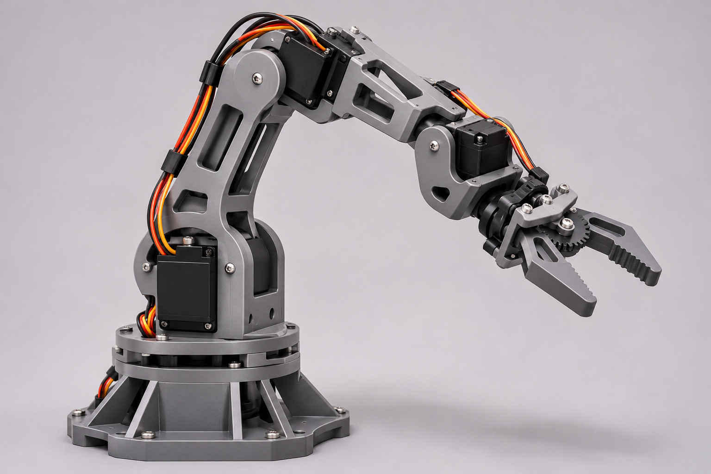

Multi-person Robot Attention
A webcam-based attention system that tracks multiple faces, selects an interaction target, and drives simulated eyes in Gazebo through ROS 2.
Robotics · Computer vision · Research
I'm Shriya, a robotics and engineering builder exploring how machines perceive their surroundings, respond to people, and become useful in the real world.
01 / Selected work
From visual perception to physical systems.
A selection of projects I've worked on.
A webcam-based attention system that tracks multiple faces, selects an interaction target, and drives simulated eyes in Gazebo through ROS 2.

A five-degree-of-freedom robotic arm, with a staged roadmap from manual control to vision-guided manipulation and learned actions.

A Python simulator of a neuromorphic camera, exploring how per-pixel brightness changes can represent a scene without capturing full frames.
A robot capable of moving in three modes of transport.
Ongoing research: contact for more info
02 / Research direction
Exploring how robots perceive, interact,
and travel across different modes.
Exploring human–robot interaction and mobility across three modes of travel.
My current project work gives me a practical starting point: gaze estimation, multi-person attention selection, and simulated robot responses. These are research interests and ongoing engineering explorations.
Explore the attention projectHow can a single robot travel in three different modes and transition between them?
How can gaze and visual cues help a robot choose whom to attend to in a multi-person setting?
How should confidence in a visual observation influence a robot's decisions when the input is incomplete or noisy?
How can visual representations, including event-based sensing, support useful behavior in physical and simulated systems?
03 / Skills & tools
Tools and methods used in my project work,
alongside areas I’m continuing to develop.
04 / Competitions
Working with teams, testing ideas,
and building toward a deadline.
PES University · 2025
A pantry-management concept to help plan meals, simplify shopping, and reduce food waste.
ProductSeptember 2026
Solved complex control-system problems for UAVs and flight controllers, placing second at Hacksimulink, sponsored by MATLAB.
Control systemsOnline / Devpost · 2024
A recycling-focused nonprofit app concept to support education in underserved communities.
Social impactPES University · 2025
An algorithmic approach to a given problem statement, placing fifth in a cohort of 70+ participants.
Algorithms05 / Startup journey
NOVA Residency
At NOVA, I pitched my deeptech startup idea to a room of more than 20 investors.
Alongside my engineering work, I’m exploring entrepreneurship: identifying problems worth solving and communicating the value of a proposed solution.
06 / About me
I'm Shriya Arunkumar. My work brings together robotics, computer vision, and product development, with a growing focus on human–robot interaction.
I enjoy taking a problem from an initial question to a working prototype: understanding the context, building the system, and evaluating how it behaves. I'm particularly interested in the decisions between sensing and action—how a robot interprets evidence and responds to people.
I also bring a product perspective to engineering: who needs this, what problem does it solve, and what would make it useful beyond the demo?
Start a conversation
For research conversations, engineering projects,
or opportunities to build something useful.